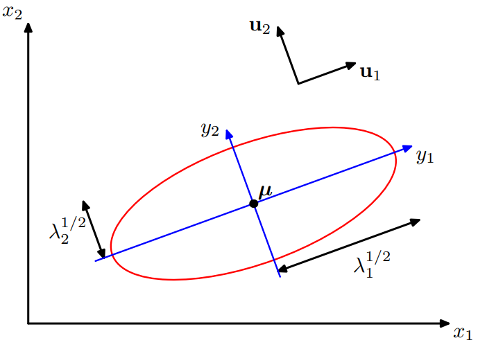
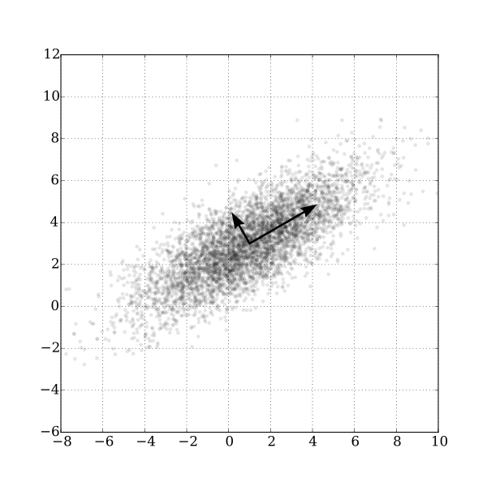

![sob]() \theta))$$
$$\vdots$$
$$l^{(1)}(\boldsymbol{x};\theta) = f^{(1)}(\boldsymbol{x}\theta))$$
\theta))$$
$$\vdots$$
$$l^{(1)}(\boldsymbol{x};\theta) = f^{(1)}(\boldsymbol{x}\theta))$$The general Machine Learning problem, we have to approximate a function $f:X \rightarrow Y$, given a dataset $D$ containing informations about $f$. The specific form of the datasets determines the category of ML problem that we want to solve.
A key thing that we have to keep in mind in the Machine Learning setting is the ineherently presence of noise. When we try to model its probability distribution, using the Gaussian distribution is often a good choice. Nontheless even if we model it with great accuracy, we still need to make predictions, thus approaching machine learning from a probabilistic perspective helps us quantify and manipulate uncerntainty directly.
In supervised learning, the dataset $D$ comprises, of pairs of input output
$$D = {<x,y>|x \in X, y \in Y }$$
An hypothesis is a candidate model that approximates a target function for mapping inputs to outputs
A hypothesis h is consistent with a set of training examples $D$ if and only if $h(x) = c(x)$ for each example $(x, c(x))$ in $D$.
The sample error represents the error that we make on instances present in the training set.
$$\text{error}S(h) = \frac{1}{n} \sum{x \in S} \delta(f(x) \neq {h(x)})$$
We assume that different instances of $X$ presented to us in the dataset is drawn from an unknown distribution $\mathcal{D}$. The true error is the error that the hypotesis make on any value choosen at random from $\mathcal{D}$.
$$\text{error}D(h) = P{x \in D}(f(x) \neq {h(x)})$$
The true error is impossible to compute, but we can estimate it.
Given a hypotheses space $H$, a hypotheses $h \in H$, is said to overfit the training data if there exists some $h' \in H$, such that:
$$\text{error}S(h) < \text{error}S(h') \cap \text{error}{\mathcal{D}}(h) > \text{error}{\mathcal{D}}(h') $$
Overfitting occurs when the hypotesis is too complex compared to the task it tries to solve.
The depth of a tree controls it's complexity. A decision tree that perfectly classify training examples could lead to overfitting when there is either noise or/and not enough samples in the dataset. There are two possible approach this problem
The second approach is to be preferred, because in the first is possible that at one given point no particular attribute is the best, but there are a combination that are informative.
Cross-validation is a statistical method used to estimate the skill of machine learning models. It is commonly used in applied machine learning to compare and select a model for a given predictive modeling problem because it is easy to understand, easy to implement, and results in skill estimates that generally have a lower bias than other methods.
If we want to compare two learning algorithms
If the resulting error is negative $A$ is better than $B$, if its positive viceversa.
Accuracy is a classification metric. The accuracy is given by the number of predicitions that our model has made correctly
Precision is the ability to avoid false positives.
Recall is the ability to avoid false negatives.
Is the harmonic mean of the precision and recall.
In general the accuracy gives is a good classification metric, however it is not suitable for all problems. For example in cases where the dataset is unbalanced, the accuracy might lead to misleading results. If we know that false positives are bad for our application we might try to maximize the precision, if on the other hand we want to avoid the possibility of false negatives we need to maximize the recall. In general this decision depends on the specific application and might not be too obvios. Another problem that arises is that exists a tradeoff between precision and recall, thus maximization of both might not be possible. The F1 score must be our choiche then if we have no reason to prefer recall over precision or vice versa.
The uncertainty is modeled in a bayesian framework. This means that our beliefs are updated as soon as new data is presented to us. The bayes theorem is as follows:
$$P(A|B) = \frac{P(B|A)P(A)}{P(D)}$$
$P(A|B)$ is the called posterior, beacuse is the updated belief about $A$ after taking into consideration the evidence, $B$. $P(B|A)$ is the likelihood and express how well the observed data supports our hypotesis. $P(A)$ is the prior, reflects the prior beliefs we had before evidence was presented to us.
Is usual that a particular learning algorithm returns not a single hypotesis but a set of hypotesis. Our objective would be to determine the most probable hypotesis $h$ given the data at hand $D$. In other word we would like to determine hypotesis that maximizes the posterior.
$$h_{MAP} = \underset{h \in H}{\text{argmax}} P(h | D) $$ $$\stackrel{(1)}{=} \underset{h \in H}{\text{argmax}} \frac{P(D|h)P(h)}{P(D)} $$ $$\stackrel{(2)}{=} \underset{h \in H}{\text{argmax}} {P(D|h)P(h)}$$
(1) Is given by Bayes Theorem. (2) Is given by the fact that $P(D)$ is a constant and $\text{argmax}$ is invariant to constant multiplication.
Assuming we know the prior probability of each hypotesis $h$, we can determine the most probable hypotesis by computing the $h_{MAP}$. However the knowledge of $P(h)$, might not be available, thus we have no reason to think that a particular hypotesis must be preferred over another, so we model it as a uniform distribution, thus $P(h)$ can be ignored, because it becomes a constant value.
$$h_{ML} =\underset{h \in H}{\text{argmax}} P(h \mid D) = \text{argmax} P(D\mid h)$$
While the $h_{MAP}$ is the most probable hypotesis, given the data, it's classification might not be the most probable. The Bayes Optimal Classifier on the other hand classify each instance with its most probable value. The BOC, determines the most probable value by making a weighted sum of the probability of a specific value $v$, assuming that $h$ is true, weighted by the probability of $h$ being true given the data $D$.
$$v_{obc} = \underset{h \in H}{\text{argmax}} \sum_{hi \in H} P(v | h)P(h | D)$$
The BOC, takes it's name from the fact that under the same hypotesis space, and with the same a priori knowledge no other method outperforms it on average. It is, however, not practical in real situations, due to its computationally intensive nature.
The Naive Bayes Classifier is a practical algorithm. It can be used under the assumption that any value $v \in V$, where $V$ is a finite set, that we want to compute, can be expressed as a conjunction of its attributes. Since every value can be described as a conjunction of its attributes, the naive Bayes algorithm determines $v_{map}$ in the following way:
$$v_{MAP} = \underset{h \in H}{\text{argmax}} P(v | a_1, a_2, .... , a_n) $$
$$\stackrel{(1)}{=} \underset{h \in H}{\text{argmax}} P( a_1, a_2, .... , a_n | v) $$ $$\stackrel{(2)}{=} \underset{h \in H}{\text{argmax}} P(v) \prod_i P(a_i | v) $$
(1) Comes from the combined application of Bayes Theorem and that $P(a_1 , \ldots , a_n)$ is a constant. (2) Comes from the Independence assumption. The independence assumptions states that attributes values are conditionally independent given the target value.
Naive Bayes is considered an approximation of the Bayes optimal classifier because it simplifies the joint probability calculation by assuming conditional independence between features given the class. While this assumption may not hold in every case, Naive Bayes remains a practical and effective classification algorithm, providing a computationally efficient way to approach the optimal Bayes classifier in situations where the independence assumption is reasonable.
$$\text{doc}_{i} = {abstract \cup title \cup author \cup pubblication }$$
We can now set up a dataset vocabulary.
So given a new doc doc_i we want to compute:
$$\text{V}{NB} = \text{argmax} P(cj \mid D) \prod{i=1}^{n} P(ai \mid cj, D)$$ $$= \text{argmax} P(cj \mid D) P(d \mid cj, D)$$
We use an approaching bag of words (BoW) based on a multinomial distribution for multiclass problem.
We represent a doc as a fixed-lenght feature vector d given that we have
$$d = <d1, ..., dn>$$
where d_i = k if word i occurs k time in doc_i
So for each feature we compute:
$$P(d|c_j, D) = \frac{n!}{d_1! \dots d_n!} \prod_{i=1}^{n} P(w_i|c_j, D)^{d_i} $$
Maximum-likelihood solution:
$$\hat{P}(w_i|c_j, D) = \frac{\sum_{\text{doc} \in D} tf_{i,j} + \alpha}{\sum_{\text{doc} \in D} tf_j + \alpha \cdot |V|} $$
dove:
Given:
$$y(x,\boldsymbol{w}) = w_0 + w_1x_1 + ... + w_dx_d = \boldsymbol{w}^Tx$$
Due to noise, we can say that:
$$t = y(x,\boldsymbol{w}) + \epsilon$$
The optimal value of $\boldsymbol{w}$ can be determined using a maximum likelihood approach. Assuming $\epsilon$ is Gaussian error, and that observations are i.i.d we can define the likelihood function of $\boldsymbol{t}$ as:
$$P( \boldsymbol{t} \mid \boldsymbol{x}, \boldsymbol{w}, \beta) = \prod_{i=1}^{n} N(t_i\mid y(x_i,\boldsymbol{w}), \beta^{-1})$$
Insted of maximizing this quantity we can maximize the log likelihood:
$$\underset{\boldsymbol{w}}{\text{argmax}}( \log( P( \boldsymbol{t} \mid \boldsymbol{x}, w, \beta))) $$ $$= \underset{\boldsymbol{w}}{\text{argmax}} (\frac{N}{2} \log {\beta} - \frac{N}{2}\log (2\pi) - \beta E_D(\boldsymbol{w}))$$
$$\stackrel{(1)}{=} \underset{\boldsymbol{w}}{\text{argmax}} (E_D(\boldsymbol{w}))$$ $$\stackrel{(2)}{=} \underset{\boldsymbol{w}}{\text{argmin}} (E_D(\boldsymbol{w}))$$
(1) Comes from the fact that argmax is invariant to constant addition and multiplication. (2) Come from the fact that maximization of the log likelihood is equivalent to the minimization of negative log likelihood. Where
$$E_d(\boldsymbol{w}) = \frac{1}{2} \sum_{i=1}^{N} ({t_i - \boldsymbol{w}^Tx_i})^2$$
In order to find the minimum we need to differentiate:
$$\nabla E_d(\boldsymbol{w}) = \sum_{i=1}^{N} (t_i - \boldsymbol{w}^T x_i)x_i^T$$
setting to zero:
$$0 = \sum_{i=1}^{N} t_ix_i^T - \boldsymbol{w}^T (\sum_{i=1}^{N}{x_{i}x_{i}^T})$$
Gives us the maximum likely solution, which can be written in closed form.
$$\boldsymbol{w}_{ML} = (\boldsymbol{X}^T\boldsymbol{X})^{-1} \boldsymbol{X}^T \boldsymbol{t} $$
Determining the optimal values using the closed form can be costly, due to the fact that, it needs to process the entire dataset. We can define an iterative approach, by updating the weights based on a subset (mini batch) or only a single element (sequential) through the following learning rule.
$$\boldsymbol{w} ^{\tau} \leftarrow \boldsymbol{w}^{\tau - 1} - \eta \nabla{E_n}$$
Where $E_n$ is the error averaged over the subset.
Utilizing as a functional form, the GLM we can model the class conditional probbailities and our model as follow:
$$P(C_1 \mid \boldsymbol{x}) = y(\boldsymbol{x}) = \sigma(\boldsymbol{w}^T\boldsymbol{x})$$ $$P(C_2 \mid \boldsymbol{x}) = 1 - P(C_1 \mid \boldsymbol{x})$$
we can express the likelihood as
$$P(\boldsymbol{t} \mid \boldsymbol{w}) = \prod_{n=1}^{N} y(\boldsymbol{x}_n)^{t_n}(1-y(\boldsymbol{x}_n))^{1-t_n}$$
Since the logarithm is a non monotonic function, we can use the maximum likelihood approach and determine the optimal values by choosing $\boldsymbol{w}^*$ as the $\boldsymbol{w}$ that maximizes the log likelihood. Also since maximizing a function is the same thing as minimizing negative:
$$- \underset{\boldsymbol{w}}{\text{argmin}} (\ln P(\boldsymbol{t} \mid \boldsymbol{w})) = -\sum_{n = 1}^{N} [t_n \ln y(\boldsymbol{x}_n) + (1-t_n)\ln (1-y(\boldsymbol{x}_n))] = E(\boldsymbol{w})$$
Which is the negative cross entropy.
A Gram Matrix is an $N \times N$ symmetric matrix with elements:
$$Knm = x_{n}^Tx_{m} = K(xn,xm)$$ $$ K = \begin{bmatrix} K(x_1, x_1) & K(x_1, x_2) & \cdots & K(x_1, x_n) \ K(x_2, x_1) & K(x_2, x_2) & \cdots & K(x_2, x_n) \ \vdots & \vdots & \ddots & \vdots \ K(x_n, x_1) & K(x_n, x_2) & \cdots & K(x_n, x_n) \end{bmatrix} $$ The entries of the Gram matrix correspond to the pairwise similarities between data points, and this matrix is employed to compute decision boundaries in the transformed feature space.
$k$ is a kernel function defined as a real-valued function, simmetric and non negative. $k(x,x')$ with $x,x' \in X$ defines similarity measure between instances $x$ and $x'$.
If an input vector $\boldsymbol{x}$, appers in an algorithm only as an inner product $x^Tx'$, then the inner product can be replaced with some kernel function $k(x,x')$
Given a linear model
$$y(x,\boldsymbol{w}) = w_0 + w_1x_1 + ... + w_dx_d = \boldsymbol{w}^Tx$$
We know, by using the maximum likely approach that a suitable error function, is the least square error
$$E_d(\boldsymbol{w}) = \frac{1}{2} \sum_{i=1}^{N} ({t_i - \boldsymbol{w}^Tx_i})^2$$
By setting it to $0$ we get the closed form of $\boldsymbol{w}^*$:
$$\boldsymbol{w}^* = (\boldsymbol{X}{\boldsymbol{X}^T})^{-1}\boldsymbol{X}^T\boldsymbol{t} = \alpha \boldsymbol{X}^T = \sum_{n=1}^{N} \alpha_nx_n $$
Were $\alpha$ is defined as $\boldsymbol{K}^{-1}\boldsymbol{t}$ and $\boldsymbol{K}$ is the Gram matrix. Putting $\boldsymbol{w}^*$ back into the model we obtain:
$$y(x,\boldsymbol{w}^) = \boldsymbol{w}^{^T}x = (\alpha\boldsymbol{X})^{T} x = \sum_{n=1}^N \alpha_nx_n^Tx $$
By using the kernel trick:
$$y(x,\boldsymbol{w}^*) = \sum_{n=1}^N \alpha_nk(x_n,x) $$
Given a linear model
$$y(x,\boldsymbol{w}) = w_0 + w_1x_1 + ... + w_dx_d = \boldsymbol{w}^Tx$$
We know, by using the maximum likely approach that a suitable error function, is the least square error
$$E_d(\boldsymbol{w}) = \frac{1}{2} \sum_{i=1}^{N} ({t_i - \boldsymbol{w}^Tx_i})^2 + \lambda ||\boldsymbol{w}||^2$$
Where $\lambda$ is a regularization term that controls the model complexity. By setting it to $0$ we get the closed form of $\boldsymbol{w}^*$:
$$\boldsymbol{w}^* = (\boldsymbol{X}{\boldsymbol{X}^T} +\lambda \boldsymbol{I_n})^{-1}\boldsymbol{X}^T\boldsymbol{t} = \alpha \boldsymbol{X}^T = \sum_{n=1}^{N} \alpha_nx_n $$
Were $\boldsymbol{\alpha}$ is defined as $(\boldsymbol{K}+\lambda \boldsymbol{I_n})^{-1}\boldsymbol{t}$ and $\boldsymbol{K}$ is the Gram matrix. Putting $\boldsymbol{w}^*$ back into the model we obtain:
$$y(x,\boldsymbol{w}^) = \boldsymbol{w}^{^T}x = (\alpha\boldsymbol{X})^{T} x = \sum_{n=1}^N \alpha_nx_n^Tx $$
By using the kernel trick:
$$y(x,\boldsymbol{w}^*) = \sum_{n=1}^N \alpha_nk(x_n,x) $$
In a probabilistic framework the joint probability $P(\boldsymbol{x}\boldsymbol{t})$ gives us the most complete information. However determining it directly is often an unfeasible task. We can then use two different approaches. A generative approach aims to understand how data is generated, it does so by learning the class conditional densities of each class $P(x\mid C_k)$, the prior $P(C_k)$, and then determining the posterior $P(C_k \mid \boldsymbol{x})$.
A discriminative approach are interessed in determining the decision boundary. This can be done in a probabilistic way, for example linear regression uses the form of the class conditional probability $P(C_k \mid x)$ of the Generalized linear models and find the best parameters by using a maximum likelihood approach. Another approach is to directly determine de decision boundary without manipulating explicitly probabilities.
The perceptron is a simple binary classification algorithm, designed to mimic the way a biological neuron works. The model coreresponds to a linear combination of the inputs, that are then passed to a function $o$ $$y(\boldsymbol{x},\boldsymbol{w}) = o(\boldsymbol{w}^T\boldsymbol{x}) $$
The $o$ function is just the sign function
$$ o(\mathbf{x}) =\text{sign}(\mathbf{w}^T\mathbf{x})= \begin{cases} 1 & \text{if } \mathbf{w}^T\mathbf{x} > 0 \ -1 & \text{otherwise} \end{cases} $$
This function however is piecewise and thus not differentiable, this means that in order to find the optimal values of $\boldsymbol{w}$ we need to define an alternative method, called perceptron critetion. The output of the sign function is either $-1$ or $1$, thus a condition that must be satisfied is $\boldsymbol{w}^T\boldsymbol{x}_i\boldsymbol{t}_i > 0$. The perceptron criterion aissngs $0$ to any pattern correctly classifiedand tris to minimize the following error function:
$$E(\boldsymbol{w})= - \sum_{n \in \mathcal{M}} \boldsymbol{w}\boldsymbol{x}_n \boldsymbol{t}_n$$
where $\mathcal{M}$ is the set of misclassified examples. It optimizes $E(\boldsymbol{w})$ using SGD. According to the perceptron convergence theorem we know that if the data is linearly separable and the learning rate $\eta$ is chosen corretly the algorithm is guaranteed to finda solution in a finite amount of steps, this however does not guarantees that the time is acceptable. The initial set of weights is choosen at random, meaning that at the beginning we are most certainly in a bad situation, however if we choose a learning rate small enough we are guaranteed to improve our situation. The problem is that in a linearly separable dataset, there may exist an infinite number of solutions, and since the movement is slow, due to the learning rate is probable that we get a decision boundary near the data points, leading to a decision boundary with poor generalization performances.
KNN is a non parametric model that uses an instance based approach. In KNN the instances of the dataset are the parameters, thus KNN has a variable number of parameters, this mean that there is no training phase, but also that it requires a lot of memory because to make a prediction we need the entire subset. Given a new instance $\boldsymbol{x}$, a value $k$ and a distance metric the classification value is chosen as follow:
The Support Vector Machines makes classification using the maximum margin. The margin is the distance between the decision boundary and its closest point. The maximum margin approach can be motivated as follow. Even if the dataset is linearly separable, there may exist many solutions, since our goal is not to determine a decision boundary but rather to determine the decision boundary that generalizes better. Since the magin is maximum we can achieve a lowe generalization error, beaause we have "more room" for error. The fact that the maximum margin yields a lowe generalization error also means that SVM are less prone to overfitting.
Given the maximum margin hyper plane, classification new instance $\boldsymbol{x}'$ is performed using by
$$y(\boldsymbol{x}') = \text{sign}( w_0^* + \sum_{k, x_k\in SV} a_k^*t_{k} \boldsymbol{x}'^T \boldsymbol{x}_k )$$
But since the input vector, is present only as inner product we can the condition to use the kernel trick is met and we can rewrite as
$$y(\boldsymbol{x}') = \text{sign}( w_0^* + \sum_{k, x_k\in SV} a_k^*t_{k} k(\boldsymbol{x}'^T, \boldsymbol{x}_k) )$$
If the dataset is not perfectly linearly separable, class conditional distributions may overlap and SVM will result in poor generalization. We can relax the SVM, allowing to make some classifications. It is intuitive to understand that, misclassified points are points that are on the wrong side of the decision boundary. Another intuitive thing is that the farther from the decision boundary the point is, the worst its classification. We formalize this concept through the we introduction of slack variables $\xi$. Slack variables mark a penalty that increases as the distance from the decision boundary grows.
Whe can use SVM for regression. In machine learning, and more specifically in supervised regression problems, we know we have to deal with noise. Thus if we make a model we know that is possible that the error we make is non zero. We express this concept utilizing the following error function:
$$J(w, C) = C \sum_{i=1}^{N} L_{\epsilon}(t_i, y_i) + \frac{1}{2} | w |^2$$
In which the term $L_{\epsilon}$ is called $\epsilon$-insensitive error function:
$$ L_{\epsilon}(t, y) = \begin{cases} 0 & \text{se } |t-y|<\epsilon \ |t-y|-\epsilon & \text{else} \end{cases} $$
The result of using the $\epsilon$-insensitive error is that there is an immaginary tube, called $\epsilon$-tube in which the predictions are assumed correct. The problem is that $\epsilon$-insensitive error function is piecewise linear and thus not differentiable. We can solve this problem by introducing two slack variables $\xi$ and $\hat{\xi}$ which represents how much we sthrive from the $\epsilon$-tube. Constraining $\xi \geq 0$ and $\hat{\xi}\geq 0$ we can reexpress the oerror function as
$$J(w, C) = C \sum_{i=1}^{N} (\xi_n+ \hat{\xi}_n) + \frac{1}{2} | w |^2$$
Which can be minimized
There are models, like SVM that only support binary classification. It is possible to extend the capabilities of the SVM into a $k$-classes classifier by using two approaches
The classification result is chosen by a majority vote.
The EM algorithm is used to find maximum likelihood parameters of a statistical model in cases where the equations cannot be solved directly. Typically these models involve latent variables in addition to unknown parameters and known data observations. That is, either missing values exist among the data, or the model can be formulated more simply by assuming the existence of further unobserved data points. For example, a mixture model can be described more simply by assuming that each observed data point has a corresponding unobserved data point, or latent variable, specifying the mixture component to which each data point belongs. In its most basic form the EM algorithm works as follows:
The Gaussian distribution is a versatile distribution, however being unimodal (has one maximum) it may not be a good fit for specific problems. We can extend the Gaussian distribution with the concept of mixture distribution or more specifically Gaussian Mixture Models. We can define a GMM as a linear superposition of $K$ Gaussian
$$P(\boldsymbol{x}) = \sum_{k=1}^{K} \pi_{k}\mathcal{N}(x \mid \mu_{k}, \Sigma_{k})$$
Where $\pi_k$ is called mixing coeffient and can be thought of the prior probability of picking the point from the $k$-th Gaussian. And $\mu_k$ and $\Sigma_k$ are the mean and covariance for the $k$-th Gaussian.
The form of the GM distribution is governed by the parameters, one way to set them is through the maximum likelihood approach, however due to the summation of gaussians is not possible to write a solution in closed form and the solution is determined through the EM algorithm.
When visualizing this parameters it might be useful to remember that the variance of a gaussian $\Sigma$ can be expressed in its $D$ components as follow:
$$\Sigma = \sum_i=1^D \lambda_i\boldsymbol{u}_i\boldsymbol{u}_i^T$$
Where $\lambda_i$ are the eigen values of $\Sigma$ 
Assuming we have a dataset comprised of $N$ instances, our goal is to determine $K$ clusters. We can intuitively think of clusters of group of data points whose inter-point distance are smalled comparedwith the distance to points outside the cluster. To formalize this concept we introduce three things
After $K$ is decided the pseudo works as follow:
A problem with K-means is the fact that it might get stuck in local minimum, preventing effectively to reach the global optimum when few data is available. Also it is not robust to outliers, so data apart from the centroid can offet it a lot
The intrinsic dimension for a data set can be thought of as the number of variables needed in a minimal representation of the data.
Is an technique widely used for applications such as
There are two definitions that lead to the same algorithm. Given a $D$ dimensional feature space, dimension $M$ such that $M<D$ and an instance $\boldsymbol{x}_D$ we can express $\boldsymbol{x}_D$ with $M$ dimensions taking the $M$ principal components.
$${\boldsymbol{x}M} = \sum{i=1}^{M} (\boldsymbol{x}D^T u{i})u_{i}$$
The intrinsic dimensions of a dataset impose a lower bound under which we canno reconstruct the input (apart from noise) anymore.
PCA can be defined as the ortogonal projection of data into a lower dimensional linear space, called principal subspace, such that the variance of the projected data is maximized.
The idea behind Maximum Variance PCA is that directions in which variance is maximized are more informative. 
We need to determine $\overline{x}$ the mean of our dataset and subtract it so the dataset has now $0$ mean. We determine the covariance of the mean $0$ dataset. Covariance can be written as an expansion in terms of its eigenvalues.
$$\boldsymbol{\Sigma} = \sum_{i=1}^D \lambda_i\boldsymbol{u}_i\boldsymbol{u}_i^T$$
By sorting them from largest to lowest, we can get the $M$ principal components by taking the first $M$ directions.
PCA can be defined as the linear projection that minimizes the average projection cost, defined as the mean squared distance between data points and their projection.
A reinforcement learning problem is a special type of machine learning problem. We have an agent and and environment, in a dynamic system. The agent interacts with the environment by choosing and action, to which the environment responds changing the state. Our goal is to determine an optimal policy $\pi : X \rightarrow A$ given a dataset $D = {<x_1,a_1,r_1, \ldots x_n,a_n,r_n>^{i} } $ composed by a sequence of states, action and rewards.
An assumption made in RL is the markov assumption, in other words we assume that the dynamic system does not depend on the history of states, observations, and actions as long as the current state is known.
An MDP is process for decision making. We assume that the states are fully observable, and we can act directly on them. Since the states are observable all the information that we need are contained into them. An MDP can be described ad a tuple:
$$\text{MDP} = <\boldsymbol{X},\boldsymbol{A},\delta,r>$$
$\boldsymbol{X}$ is the set of possibles states.$\boldsymbol{A}$ is the set of possibles actions. $\delta$ is a transition model and describes how the system evolve after executing each action. $r$ is a reward function, after each action the system recieves a numeric feedback signaling either a good or bad choice of action.
The K-bandit problem is a subclass of reinforcement learning problems. The problem goes as follows:
"You are faced to choose between $k$ options, after you choose an option you recieve a reward, the goal is the maximize the expected reward over a period of time"
The K-bandit problem is also called one-state MDP because you have only one state. The importance of the k-armed bandit is due to the fact that illustrates some pillar concepts of reinforcement learning, such as the exploration-exploitation trade-off, the concept of optimal policy and more.
In a K-Bandit problem, we have no information about the rewards. Thus in order to get the optimal policy we need to learn (gather informations about $r$ through simulation), determine an optimal policy and only then we can make decisions.
Depending on how the reward function behaves, and the type of informations about it we can define 4 solutions:
Is an algorithm to determine the optimal policy. We define the Q-value as $Q(x,a)$ as the expected cumulative reward the agent will recieve by taking the action $a$ in state $x$ and following the policy there after. For each state action pair, the Q-learning algorithm mantains a Q-value and updates iteratively. The pseudo code is the following:
If the reward functions are non deterministic or unknown the Q-value is just an estimate. Our objective is to maximize the reward. At any fiven time there must be an action that has the highest reward, this action is called greedy. We can alwayas choose the action that yields the best result (exploitation). However we might its also possible that by choosing some suboptimal action, the overall policy is better (exploration). At any given time you cannot choose both exploration and exploitation thus you have a trade off. An approach that can be embedded into the Q-learning algorithm, is that when choosing the action, we choose with a probability of $1-\epsilon$ greedy action and with a probability of $\epsilon$ a random action choosen uniformly.
The Hidden Markov Models are a formulation of a Markov Process in which we assume that we cannot control the evolution of the system . We assume that a state generates an event with a certain probability, we can observe the event but we cannot observe the state.
$$\text{HMM} = <\boldsymbol{X},\boldsymbol{Z}, \pi_0>$$
$\boldsymbol{X}$ is the set of states, which are not observable but we know that exists. $\boldsymbol{Z}$ is the set of observations of the events generated by the states. The transition model is described by $P(\boldsymbol{x_t}|\boldsymbol{x_{t-1}})$, meaning that the current state depends on the previous state. The observation modle instead is $P(\boldsymbol{z_t}|\boldsymbol{x_{t-1}})$, meaning that the current observation depends from the previous state. Last $\pi_0$ describes the probability of starting at exactly $x_0, x_0 \in \boldsymbol{X}$. Our goal is to reconstruct the states from the observations.
Partially Observable Markov Decision Process are a union of the elements of both MDP and HMM. As in the HMM we don't assume a full observability of the states, however as in the MDP we can act on the environment.
$$\text{POMDP}= <\boldsymbol{X},\boldsymbol{A},\boldsymbol{Z}, \delta, r, o>$$
$\boldsymbol{X}$ is the set of states, which are not observable but we know that exists. $\boldsymbol{Z}$ is the set of observations of the events generated by the states. We have a probability distribution describing the probability of starting at state $x_0, x_0 \in \boldsymbol{X}$. We can act on the environment by choosing an action in $A$. The transition function $\delta$ is a probability distribution $P(x'|x,a)$ that describes the probability of ending up on $x'$ after executing $a$ on $x$. $o$ is a probability distribution over distributions, $P(z'|x',a)$ describes the probability of observing $z'$, after we end up on $x'$ by the execution of $a$
The neural network models can be described at a mathematical level as a composition of functions, where each function is defined either in the hiden layers or the output layer. Supposing that there are $H$ hidden layers $l$:
$$y(\boldsymbol{x};\theta) = f^{(out)}(l^H;(\theta))$$
$$l^H(\boldsymbol{x};\theta) = f^{(H)}(l^{(H-1)}\theta))$$
$$\vdots$$
$$l^{(1)}(\boldsymbol{x};\theta) = f^{(1)}(\boldsymbol{x}\theta))$$
The back-propagation algorithm is used to propagate gradient computation from the cost through the whole network. It leverages the chain rule and the fact that the Network is just a composition of functions to determine the gradient in an efficient way. The Backpropagation algorithm can be thought as two different steps:
It makes the input $\boldsymbol{x}$ "flow" through the network.
It takes the gradient of the loss and makes it "flow" up until the input
Stochastic Gradient descent is an iterative method for optimization. It updates the weights using this update rule:
$$\boldsymbol{\theta}^{(t+1)} = \boldsymbol{\theta}^{(t)} - \eta \nabla E(\boldsymbol{\theta})$$
Where $\eta$ is an hyperparameter called learning rate.
A saturating activation functions squeeze the input. In the neural network context, the phenomenon of saturation refers to the state in which a neuron predominantly outputs values close to the asymptotic ends of the bounded activation function.
Model implicitly defines a conditional distribution $P(\boldsymbol{t} \mid \boldsymbol{x}, \boldsymbol{\theta})$. We can define the loss function using the Maximum likelihood principle. In particular we can just take a the expected value of the, the minimum of negative log likelihood.
$$J(\boldsymbol{\theta}) = \mathbb{E}_{\boldsymbol{x},\boldsymbol{t}\sim D} [- \ln P(\boldsymbol{t} \mid \boldsymbol{x}, \boldsymbol{\theta})]$$
Where the specific cost function depends on the specific model.
Linear units: Identity activation function
$$y = \boldsymbol{w}^T \boldsymbol{h} + \boldsymbol{b} $$
Assuming a Gaussian distribution noise the functional form of the error function is the MSE.
$$J(\boldsymbol{\theta}) = \mathbb{E}_{x,t\sim D} [\frac{1}{2} (t- y(\boldsymbol{x_n};\boldsymbol{\theta}))^2] $$
There is no "squeeze" of the input, thus the units cannot saturate.
Output units: Sigmoid activation function
$$y = \sigma(\boldsymbol{w}^T \boldsymbol{h} + \boldsymbol{b}) $$
The functional form of the error function is the Binary cross-entropy.
$$J(\boldsymbol{\theta}) = \mathbb{E}_{x,t\sim D} [- \ln p(t \mid x)] $$
Output unit saturates only when it gives the correct answer.
Output units: Softmax activation functions
$$y_i = \text{softmax}(\alpha^{(i)}) = \frac{\exp(\alpha^{(i)})}{\sum_j \exp(\alpha_j)} $$
Loss function: Categorical cross-entropy
$$J_i(\boldsymbol{\theta}) = \mathbb{E}_{x,t \sim D} [- \ln \text{softmax}(\alpha^{(i)})] $$
with $( \alpha^{(i)} = \boldsymbol{w}_i^T \boldsymbol{h} + \boldsymbol{b}_i)$. Output units saturate only when there are minimal errors.
A Convolutional Neural Network are Neural Networks that uses convolution instead of matrix multiplication in at least one layer. They are specialized for processing data that present a grid-like topology.
Convolutional Neural Networks legerages two main ideas to overcome overfitting.
$$w_{out} = \frac{w_{in} - w_{k} + 2p}{s}+1 $$ $$h_{out} = \frac{h{in} - h_{k} + 2p}{s}+1 $$ $$\mid \theta \mid = w_{k} \times h_{k} \times d_{in} \times d_{out} + d_{out} $$
Necessary padding:
$$\left \lfloor \frac{wk}{2} \right \rfloor $$
An autoencoder is a special type of neural network that is trained to copy its input to its output.It has the following properties
They both perform dimensionality reduction, however they do it in two different ways. The difference between PCA and autoencoders is that PCA perform a linear trasformation, while autoencoders perform a non linear transformation
The general idea of examples is to combine different models into a single best model
Is a sequential approach to ensembles. Each learner is trained on the dataset weighted on previous mistakes. Our goal is to minimize the misclassified instances, thus after each iteration we give higher weight to misclassified instances, thus specializing each learner in the set of instances that was previously misclassified.
Assuming you have $M$ weak learners, learnes that perform at least a little bit better than a random guesser Given $( D = { (x_1, t_1), \ldots, (x_N, t_N) } ), where ( x_n \in X, t_n \in { -1, +1 } )$
Uniformly initialize the weights.
For $( m = 1, \ldots, M )$:
Output the final classifier